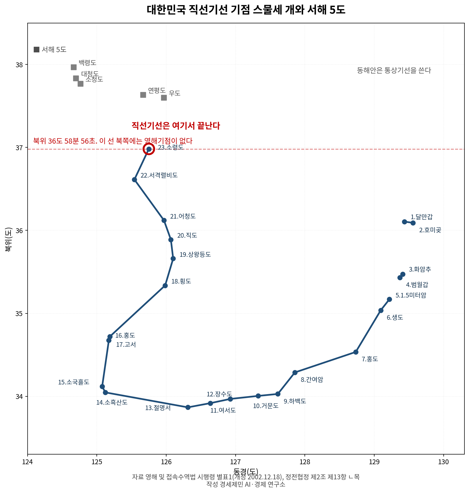
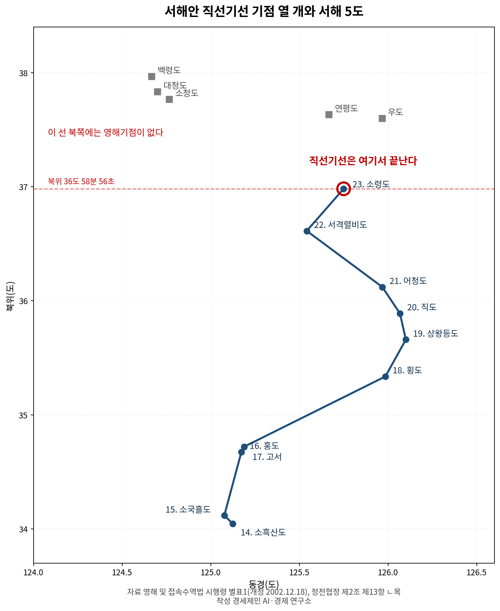
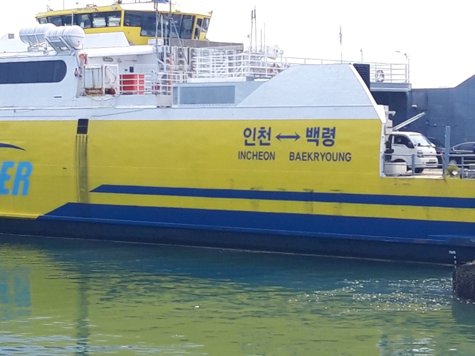
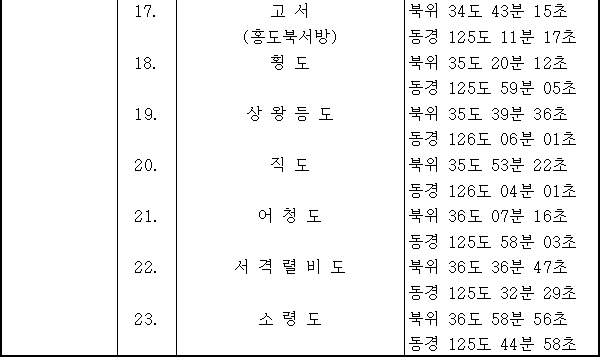

[5극3특 해양주권②] 서해 영해기점 마지막은 인천 섬 소령도, 그 위는 확정된 선이 없다
영해법 시행령 직선기선 기점 23개, 서북 끝이 옹진군 덕적면 소령도
정전협정에 북방한계선 없어, 서해 5도는 제2조 13항 단서로 남겨
9·19 군사합의 2024년 전부 효력정지, 복원 방침만 있고 조치 없어
인천시가 섬을 197개로 확정했다. 그 가운데 하나인 소령도가 대한민국 영해기점의 서북 끝이다. 그 위쪽 바다에 무엇이 있고 무엇이 없는지를 조문으로 짚는다.


1. 영해기점 스물세 개, 마지막이 인천 섬이다
영해법은 기선에서 바깥쪽 12해리까지를 영해로 정하고 기선을 통상기선과 직선기선 둘로 나눈다. 통상기선은 대축척해도에 표시된 저조선이고, 지리적 특수사정이 있는 수역은 대통령령이 정한 기점을 이어 직선기선으로 삼을 수 있다. 그 기점 목록이 시행령 별표1에 좌표와 함께 실려 있다.
별표1에 실린 기점은 스물세 개다. 영일만에 달만갑과 호미곶, 울산만에 화암추와 범월갑, 남해안에 1.5미터암부터 절명서까지 아홉 개, 서해안에 소흑산도부터 소령도까지 열 개다. 서해안 기점은 소흑산도와 소국흘도와 홍도와 고서와 횡도와 상왕등도와 직도와 어청도와 서격렬비도를 거쳐 소령도에서 끝난다.
마지막 스물세 번째 소령도는 인천 섬이다. 해양수산부는 2018년 6월 이달의 무인도서로 소령도를 고르면서 인천 옹진군 덕적면에 속한 면적 5752㎡ 무인도라고 밝혔다. 인천항에서 94.8㎞, 가까운 유인도인 백아도에서 20.4㎞ 떨어져 있고 영해기점 스물세 개 가운데 가장 서북단이다.

2. 소령도 위쪽에는 기점이 없다
소령도 좌표는 북위 36도 58분 56초, 동경 125도 44분 58초다. 이 별표는 2002년 12월 18일 개정됐고, 부칙은 별표1 개정규정을 2003년 1월 1일부터 시행한다고 정했다. 그 뒤 스물세 해가 지나도록 스물네 번째 기점은 더해지지 않았다.
그래서 백령도와 대청도와 연평도는 영해기점 목록에 없다. 이번에 인천시가 확정한 섬 197개 가운데 소령도 북쪽에 놓인 섬이 모두 그렇다. 대한민국이 직선기선을 선포한 자리는 남쪽 소흑산도에서 시작해 소령도에서 멈춰 있다.
기점이 없다는 것은 그 섬에서 12해리를 재는 근거가 없다는 뜻이다. 서해 5도는 실효지배와 정전협정 단서로 관리돼 왔을 뿐 영해법 체계 안에 자리를 얻지 못했다. 무인도 하나가 목록의 끝을 맡고 있는 셈이다.

3. 정전협정이 정하지 않은 것
1953년 7월 27일 국제연합군 총사령관과 조선인민군 최고사령관과 중국인민지원군 사령관이 정전협정에 서명했다. 협정은 육상 군사분계선을 정했지만 바다는 달랐다. 협정 본문 어디에도 북방한계선이라는 말이 없고 해상경계선을 정한 조항 자체가 없다.
서해 섬은 다른 방식으로 처리됐다. 제2조 제13항 ㄴ목은 황해도와 경기도 도계선 북쪽과 서쪽 섬 가운데 백령도와 대청도와 소청도와 연평도와 우도만 국제연합군 총사령관 군사통제 아래 남기고 나머지는 북측 통제 아래 뒀다. 다섯 섬은 좌표까지 적었고 백령도는 북위 37도 58분, 동경 124도 40분이다.
이름조차 어긋나 있다. 정전협정이 적은 다섯 섬에는 우도가 들어 있는데, 서해 5도 지원 특별법 제2조는 서해 5도를 옹진군에 속하는 백령도와 대청도와 소청도와 연평도와 소연평도로 적었다. 우도는 강화군 서도면 소속이라 특별법 요건에 들지 않는다.
4. 연평도와 소청도 사이
박장호와 윤귀호와 최정호는 2026년 해사법연구에 실은 논문에서 이 구간을 짚었다. 통상기선을 적용하면 연평도와 소청도 사이 약 27해리 해역이 배타적경제수역으로 남는다는 것이다. 그 수역에서는 항행사고가 나도 기국주의 원칙에 따라 형사재판 관할권 행사에 제약이 생긴다.
세 사람은 경인경제권 관문에 해당하는 해역에서 외국 정부 선박 활동에 대한 통제와 대응이 약해질 수 있다는 점도 함께 짚었다. 특히 중국 선박을 들었다. 관할의 공백이 안보의 공백과 겹치는 자리라는 것이다.
대안으로는 두 가지 안을 견줬다. 소령도에서 가지도를 잇는 안과 소령도에서 소청도를 잇는 안이다. 기점 사이 거리와 본토 이격거리를 따진 결과 소령도와 가지도를 잇는 안을 관할 공백을 메우면서 위험 요소도 함께 관리할 수 있는 대안으로 제시했다.
5. 합의했다가 멈춘 것들
남북이 이 문제를 다룬 적은 있다. 2007년 10·4 선언 제5항은 해주 지역과 주변 해역을 아우르는 서해평화협력특별지대를 설치하고 공동어로구역과 평화수역을 설정하기로 적었다. 같은 선언 제3항은 남측 국방부 장관과 북측 인민무력부 부장 회담을 그해 11월 평양에서 열기로 했다.
2018년 9월 19일 군사분야 합의서 3항도 같은 길을 갔다. 북방한계선 일대를 평화수역으로 만들고 시범 공동어로구역을 설정하며 남북 공동순찰 방안을 마련한다고 적었다. 그러나 3항 어디에도 범위와 좌표와 해리 수치가 없다.
합의 자체가 멈춰 있다. 국방부는 2024년 6월 4일 국무회의 의결과 대통령 재가를 거쳐 그날 오후 3시부로 9·19 군사합의 전부의 효력을 정지했다. 통일부는 2026년 8월 5일 하반기 업무보고에서 9·19 군사합의 복원 시작을 앞으로 할 일로 올렸고, 9월 1일까지 효력정지를 푼 의결은 확인되지 않는다.
멈춘 것이 합의만은 아니다. 인천시가 추진한 백령·대청 유네스코 세계지질공원은 2025년 5월 북한이 서면 이의를 내면서 심사가 멈췄다. 운영지침 5.4조는 회원국 이의가 접수되면 과학적 평가로 넘어가지 않고 당사국들이 해결책을 찾게 정한다.
기점은 소령도에서 멈춰 있고 정전협정은 해상경계를 정하지 않았으며 남북이 만든 합의는 효력이 정지돼 있다. 이것이 인천 섬 197개가 딛고 선 북쪽 바다의 사정이다.
※ 이 기사는 AI 프로그램 클로드를 활용해 작성했습니다.
#소령도 #영해기점 #직선기선 #서해5도 #북방한계선 #정전협정 #919군사합의 #인천섬197개 #옹진군 #해양경계
참고문헌
·법제처(2021), 「영해 및 접속수역법 시행령 [별표 1] 직선을 기선으로 하는 수역과 그 기점」, 개정 2002.12.18. https://www.law.go.kr/LSW/lsInfoP.do?lsiSeq=227699&chrClsCd=010202&urlMode=lsInfoP&efYd=20210105
·법제처(2018), 「영해 및 접속수역법」, 법률 제15429호. https://www.law.go.kr/LSW/lsInfoP.do?lsiSeq=202628&chrClsCd=010202&urlMode=lsInfoP&efYd=20180614
·해양수산부(2018), "6월 이달의 무인도서 소령도 선정", 2018.6.1. https://eiec.kdi.re.kr/policy/materialView.do?num=177323
·국제연합군 총사령관·조선인민군 최고사령관·중국인민지원군 사령관(1953), 「한국 군사정전에 관한 협정」, 1953.7.27. https://peacemaker.un.org/sites/default/files/document/files/2024/05/kp2bkr530727agreementconcerningmilitaryarmistice.pdf
·법제처(2022), 「서해 5도 지원 특별법」, 법률 제19107호. https://www.law.go.kr/LSW/lsInfoP.do?lsiSeq=246595&chrClsCd=010202&urlMode=lsInfoP&efYd=20221227
·박장호·윤귀호·최정호(2026), "서해 연안 영해기점 미설정에 관한 비판적 고찰", 『해사법연구』, 38(1), 227-272. https://www.kci.go.kr/kciportal/ci/sereArticleSearch/ciSereArtiView.kci?sereArticleSearchBean.artiId=ART003321469
·대한민국·조선민주주의인민공화국(2007), 「남북관계 발전과 평화번영을 위한 선언」, 2007.10.4. https://contents.history.go.kr/id/hm_153_0100
·대한민국 국방부·조선민주주의인민공화국 인민무력성(2018), 「판문점선언 이행을 위한 군사분야 합의서」, 2018.9.19. https://dialogue.unikorea.go.kr/ukd/c/ca/usrtalkmanage/List.do?tab=5&agreement_type=01
·국방부(2024), "9·19 군사합의 전부 효력정지", 2024.6.4. https://www.korea.kr/briefing/pressReleaseView.do?newsId=156634254
·통일부(2026), "통일부, 2026년 하반기 업무보고 실시", 2026.8.5. https://unikorea.go.kr/web/unikorea/bbs/bbs_0000000000000004/59760
·UNESCO(2015), "Operational Guidelines for UNESCO Global Geoparks", 38 C/14 Annex II, 5.4. https://www.unesco.org/en/iggp/geoparks/applications
